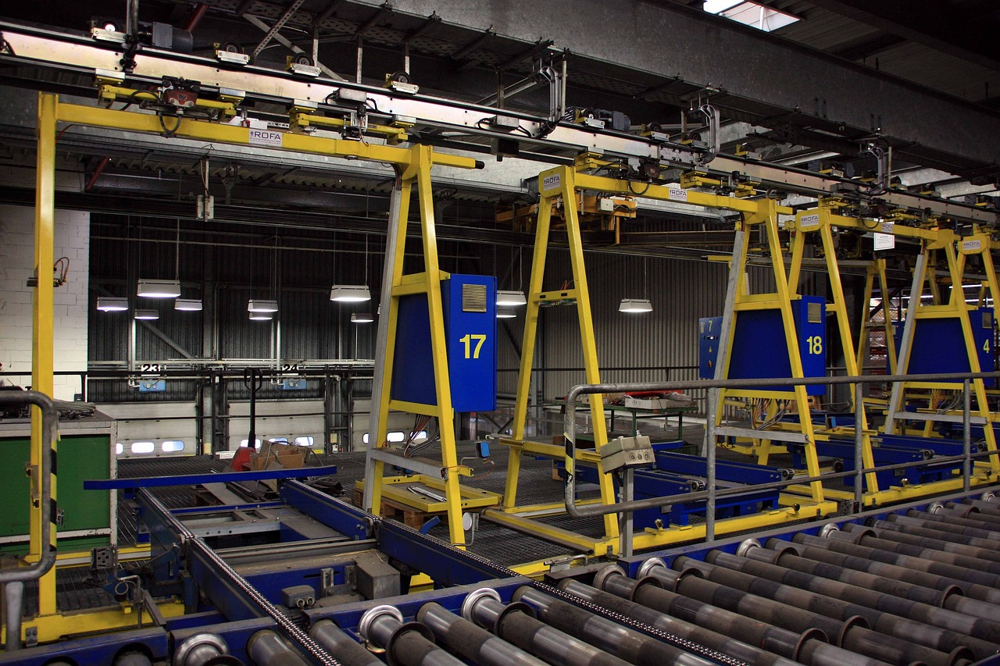
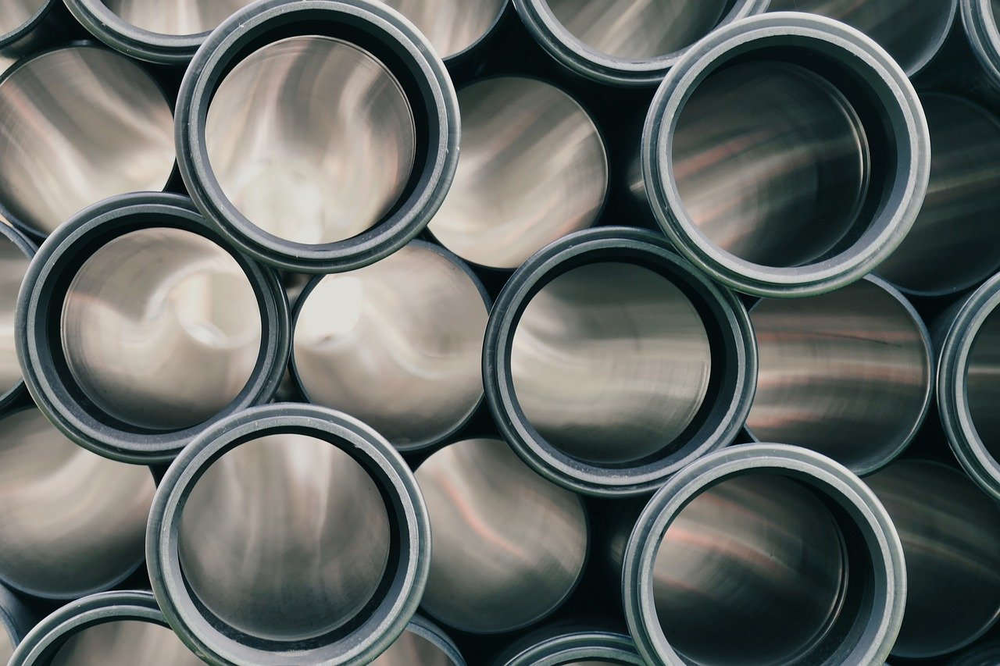

ÚLTIMS PROJECTES

Programas de Gestión
Ofrecemos programas de gestión personalizados para empresas de diversos sectores, mejorando la eficiencia operativa y la toma de decisiones estratégicas.

Maquinaria
Desarrollamos software personalizado para la gestión y control de maquinaria especializada, ofreciendo herramientas de software para optimizar la producción y la gestión de proyectos.

Mantenimiento
Desarrollamos soluciones de software personalizado para empresas industriales, incluyendo la gestión de incidencias, exposiciones virtuales y aplicaciones interactivas para visitantes.